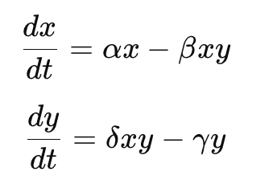

1. Вступ
Пояснення теми:
Екотрофологія - це наука, що вивчає взаємозв'язки між живими організмами та їхнім харчуванням у природних екосистемах. Термін "екотрофологія" походить від грецьких слів "еко" (екосистема) і "трофея" (харчування), тому він вказує на спосіб, яким живі організми отримують свою їжу в природі та взаємодіють між собою через харчування.
Основні поняття і принципи екотрофології включають:
1. Живий організм як частину харчової мережі: У природних екосистемах кожен живий організм є частиною харчової мережі, де він виступає як споживач (хижак або травоїдна тварина) або постачальник (рослина або виробник).
2. Трофічні рівні та взаємозв'язки: Екотрофологія вивчає структуру та функціонування харчових ланцюгів та харчових павуків, а також взаємозв'язки між різними трофічними рівнями (наприклад, взаємодія між хижаками та їхніми жертвами).
3. Енергетичні потоки в екосистемах: Екотрофологія вивчає перетворення та передачу енергії через харчові ланцюги, що є ключовим аспектом функціонування природних екосистем.
4. Роль людини в харчових мережах: В сучасному світі екотрофологія також вивчає вплив людської діяльності на природні харчові мережі, включаючи зміни в біорізноманітті, втручання в екосистеми та забруднення довкілля.
5. Застосування в екологічному управлінні та консервації: Екотрофологія має важливе значення для розробки стратегій збереження біорізноманіття, екологічного управління та відновлення природних екосистем.
Отже, екотрофологія допомагає нам краще розуміти природні харчові мережі та їхню взаємодію з навколишнім середовищем, що є важливим для збереження природних екосистем і підтримки екологічної рівноваги.
Визначення основних термінів:
Ось декілька основних термінів у екотрофології:
1. Харчова мережа (також відома як харчова павутиння або харчова мережа): Це мережа взаємозалежних організмів у природній екосистемі, які харчуються один одним. Харчова мережа включає в себе різні трофічні рівні (такі як виробники, споживачі, розкладачі) і відображає перенесення енергії та харчових ресурсів у системі.
2. Трофічний рівень: Це позиція організму в харчовій мережі, визначена його джерелом харчування. Виробники, які виробляють свою власну органічну речовину, зазвичай є першим трофічним рівнем. Споживачі, які отримують свій харч з інших організмів, розташовані на вищих трофічних рівнях.
3. Трофічний ланцюг: Це послідовна серія харчових зв'язків між різними організмами у природній екосистемі. У трофічному ланцюгу енергія та поживні речовини передаються від одного організму до іншого через харчові ланцюги.
4. Трофічна піраміда: Це графічне зображення трофічної структури екосистеми, де кожен рівень споживачів представлений як блок або шар. Трофічні піраміди зазвичай показують, як енергія зменшується з нижніх трофічних рівнів (виробники) до верхніх (хижаки).
5. Трофічний розклад: Це процес розкладання органічних матеріалів на більш прості речовини, який здійснюють бактерії, гриби та інші мікроорганізми. Трофічний розклад відіграє важливу роль у переробці органічної речовини та відновленні поживних речовин у ґр унті та водоймі.
6. Біомаса: Це маса всіх живих організмів у певній області чи екосистемі. Біомаса використовується для визначення кількості живої матерії та енергії, яку містить певна область.
Ці терміни є основоположними для розуміння концепцій та процесів у екотрофології.
2. Історія розвитку екотрофології
Початки досліджень:
Початки досліджень у галузі екотрофології пов'язані з розвитком екологічних та еволюційних наук у другій половині XIX століття та на початку XX століття. Ось кілька ключових етапів та вчених, які внесли важливий внесок у вивчення екотрофології:
1. Класичні екологічні дослідження: Початкові етапи екотрофології можна віднести до класичних досліджень екологічних систем, зокрема до робіт вчених, таких як Шарль Дарвін, Альфред Рассель Воллес, Генрі Глейджер, Шарль Ельтон та інших. Вони досліджували взаємозв'язки між організмами у природних середовищах та розвинули основні концепції, які лягли в основу екотрофології.
2. Теорія харчових мереж: У середині XX століття розвивалися теорії харчових мереж, зокрема роботи Роберта Мак-Артура та Говарда Одрома Стронга. Вони розглядали харчові відносини між різними організмами у вигляді мережі, що стала важливим етапом у формуванні концепцій екотрофології.
3. Розвиток екології хижак-жертва: В середині XX століття також активно розвивалася екологія хижак-жертва, яка досліджує взаємодію між хижаками та їхніми жертвами у природних системах. Вчені, такі як Альфред Лотка та Волтер Вольтерра, розробляли математичні моделі, щоб пояснити динаміку популяцій хижаків та жертв.
4. Поширення екотрофології у XX столітті: У другій половині XX століття екотрофологія стала однією з ключових галузей екології. Розвиток комп'ютерних технологій та математичних методів дозволив проводити більш складні моделювання харчових відносин у природних екосистемах.
5. Сучасні дослідження: Сьогодні екотрофологія залишається активною галуззю наукових досліджень. Вона використовує сучасні методи та технології, включаючи генетичні аналізи, радіомаркування та супутникове спостереження, щоб досліджувати харчові відносини та їх вплив на природні екосистеми.
Ці етапи вказують на поступовий розвиток екотрофології від перших класичних досліджень до сучасних наукових методів дослідження.
Важливі події та вчені в історії екотрофології:
У галузі екотрофології було багато важливих подій та видатних вчених, які внесли значний внесок у її розвиток. Ось декілька ключових подій та вчених, які варто відзначити:
1. Роберт Мак-Артур (Robert MacArthur): Американський еколог, який зробив важливий внесок у вивчення харчових мереж і біорізноманіття. Він розробив концепцію "теорії островів", яка пояснює різноманітність видів на островах у залежності від їхнього розміру та віддаленості від континенту.
2. Деніель Янг (Daniel Janzen): Американський біолог, відомий своїми дослідженнями взаємодії між рослинами та харчовими організмами, зокрема метеликами-гусеницями та мурахами. Його роботи допомогли розкрити складні екологічні взаємозв'язки в тропічних лісах.
3. Шарль Ельтон (Charles Elton): Британський еколог, який вперше ввів термін "трофічний рівень" та розвинув концепцію екології хижак-жертва. Він також зробив значний внесок у вивчення взаємодії між організмами в харчових ланцюгах.
4. Реймонд Ліндеман (Raymond Lindeman): Американський еколог, який провів перші кількісні дослідження енергетичних потоків у природних екосистемах. Його роботи стали основою для розвитку концепцій харчових мереж та екотрофології.
5. Роберт Пейн (Robert T. Paine): Американський еколог, відомий своїми дослідженнями взаємодії між хижаками та їхніми жертвами у морських екосистемах. Він вперше використав термін "трофічна каскада", щоб описати вплив хижаків на структуру та функціонування екосистем.
6. Дейвід Тілмен (David Tilman): Американський еколог, який досліджував вплив біорізноманіття на функціонування екосистем. Він провів багато експериментів, щоб розкрити важливість різноманітності видів для підтримки екосистемної стійкості та продуктивності.
Ці вчені та події відіграли важливу роль у становленні екотрофології як важливої галузі екології, яка досліджує харчові взаємозв'язки у природних екосистемах.
3. Основні поняття та теорії
Трофічні ланцюги та мережі:
Трофічні ланцюги та мережі є ключовими поняттями в екотрофології, які допомагають розуміти взаємозв'язки між різними організмами у природних екосистемах. Давайте розглянемо їх більш детально:
1. Трофічний ланцюг: Це послідовна послідовність організмів у природній екосистемі, де кожен організм служить їжею для наступного. Трофічний ланцюг починається з виробників, які виробляють свою власну органічну речовину (наприклад, рослини), та закінчується хижаками, які є верхнім рівнем споживачів.
Наприклад, водорості можуть бути виробниками, які фотосинтезують і виробляють органічну речовину. Риби є травоїдними організмами, які харчуються водоростями. А кити можуть бути хижаками, які харчуються рибами.
2. Трофічна мережа: Це більш складна мережа харчових відносин між різними організмами у природній екосистемі. У трофічній мережі організми можуть мати декілька харчових зв'язків, тобто вони можуть бути споживачами для декількох видів і в той же час бути жертвами для інших. Такі мережі дають уявлення про більш складні взаємозв'язки у природних екосистемах.
Наприклад, риби можуть харчуватися водоростями, а також маленькими ракоподібними. А кити можуть харчуватися рибами, кальмарами та іншими морськими тваринами. Таким чином, у трофічній мережі кожен організм може виконувати кілька ролей.
Трофічні ланцюги та мережі важливі для розуміння енергетичних потоків та перенесення поживних речовин у природних екосистемах. Вони також відображають взаємозалежність різних видів організмів і показують, як зміни в одній частині мережі можуть впливати на інші організми та екосистему в цілому.
Енергетичні потоки:
Енергетичні потоки є ключовим аспектом екотрофології і відображають перенесення енергії від одних організмів до інших через харчові відносини у природних екосистемах. Розуміння енергетичних потоків допомагає вивчати структуру та функціонування харчових мереж і розкриває важливі аспекти взаємодії між різними видами.
Основні принципи енергетичних потоків в екотрофології включають:
1. Перетворення сонячної енергії: Сонячна енергія є джерелом енергії для всіх живих організмів на Землі. Рослини та інші виробники використовують сонячне випромінювання у процесі фотосинтезу для вироблення органічних речовин, які служать їжею для споживачів.
2. Перенесення енергії через харчові відносини: Енергія передається від одного організму до іншого через харчові ланцюги та мережі. Коли один організм споживає іншого, він отримує енергію, яка була збережена в органічних речовинах цього організму.
3. Закон другого закону термодинаміки: Згідно з другим законом термодинаміки, енергія завжди втрачається у формі тепла при кожному перенесенні, тому енергетичні потоки в екосистемі не є 100% ефективними. Частка енергії втрачена під час кожного кроку харчового ланцюга.
4. Біомаса та продуктивність: Енергія, яка накопичується в біомасі живих організмів, визначає їхню продуктивність. Біомаса використовується як вимір енергетичних потоків в екосистемах та показник енергетичної ефективності.
Розуміння енергетичних потоків дозволяє вивчати енергетичні взаємозв'язки між різними організмами, розкривати роль виробників у забезпеченні енергії усій екосистемі, а також аналізувати вплив людської діяльності на енергетичні потоки та біомасу в природних системах.
Теорія Лотки-Вольтерра:
Теорія Лотки-Вольтерра, також відома як теорія хижак-жертва, є однією з основних теорій у екології та екотрофології. Ця теорія була запропонована Вітторіо Лоткой та Альфредом Вольтерра в різні періоди, але їхні роботи в основному датуються початком 20 століття.
Основна ідея теорії полягає в тому, що в популяціях хижаків і їхніх жертв взаємодія відбувається через харчування. Зростання популяції хижаків призводить до зменшення кількості жертв, що знову зменшує кількість хижаків через нестачу їжі, і таким чином циклічно повторюється.
Математично теорію Лотки-Вольтерра можна виразити за допомогою системи диференціальних рівнянь, які описують зміни в часі кількості хижаків та їхніх жертв. Зазвичай вона представлена такою системою рівнянь:
де:
x - кількість хижаків,
y - кількість жертв,
t - час,
α,β,γ,δ - параметри, які визначають рівень народжуваності, смертності та ефективності полювання.
Теорія Лотки-Вольтерра використовується для пояснення та прогнозування динаміки популяцій в екосистемах, а також для розуміння впливу факторів, таких як полювання, зміни середовища та взаємодія з іншими видами, на структуру та функціонування цих екосистем.
Харчові піраміди:
Харчові піраміди є важливим інструментом у екології та екотрофології для візуалізації та розуміння взаємозв'язків між різними організмами в екосистемі щодо їхнього харчування та рівнів споживання енергії.
Зазвичай харчові піраміди подаються у вигляді діаграм, де верхній рівень відображає хижаків, які зазвичай знаходяться на вершині харчової ланцюга екосистеми. На нижчих рівнях розташовані різноманітні рівні споживачів, починаючи від рослин (продуцентів) і переходячи до різних рівнів травоїдних, хижаків, і, можливо, розкладачів.
Основна ідея харчових пірамід полягає у тому, що енергія передається від одного рівня до іншого у формі органічних речовин через споживання. Процес передачі енергії від рівня до рівня відображає рівень харчування та взаємозв'язок між різними членами екосистеми.
Харчові піраміди можуть бути дуже складними, оскільки враховують велику кількість різних видів та їхніх взаємозв'язків. Ці піраміди є корисним інструментом для вивчення динаміки популяцій та енергетичних потоків в екосистемах, а також для оцінки впливу різних факторів, таких як втрата біорізноманіття чи зміна клімату, на функціонування екосистеми.
4. Методи дослідження в екотрофології
Польові дослідження:
Польові дослідження у екотрофології є важливою складовою частиною науки про екологічні взаємодії між організмами в природних екосистемах. Ці дослідження зазвичай включають в себе спостереження, збір даних та експерименти, проведені безпосередньо у природному середовищі.
Ось деякі типові аспекти польових досліджень у екотрофології:
1. Спостереження популяцій: Дослідження розподілу, розмноження, міграції та взаємодії популяцій організмів у їхніх природних середовищах.
2. Вивчення харчових взаємозв'язків: Аналіз харчових зв'язків між різними видами, включаючи взаємодію хижаків і жертв, а також взаємозв'язки між рослинами та травоїдними.
3. Вимірювання енергетичних потоків: Оцінка обсягів енергії, що переходить від одного рівня споживачів до іншого через ланцюг харчування.
4. Вивчення абіотичних факторів: Врахування впливу абіотичних факторів, таких як клімат, ґрунтові умови, топографія тощо, на структуру та функціонування екосистем.
5. Експериментальні маніпуляції: Проведення експериментів у природних умовах для вивчення впливу різних факторів на популяції та екосистеми.
6. Моніторинг та оцінка: Постійне спостереження та оцінка змін у природних екосистемах для визначення тенденцій та виявлення потенційних проблем.
Польові дослідження в екотрофології допомагають розширити наше розуміння природних екосистем, їхніх взаємодій та реакцій на зміни у середовищі. Вони є основою для розробки стратегій збереження біорізноманіття та ефективного управління природними ресурсами.
Лабораторні експерименти:
Лабораторні експерименти у екотрофології відіграють важливу роль у вивченні екологічних взаємозв'язків та процесів, які відбуваються у природних екосистемах. Хоча лабораторія не може повністю відтворити складність та різноманіття природних середовищ, вона надає дослідникам контрольовані умови для проведення експериментів та досліджень. Ось деякі типові аспекти лабораторних експериментів у екотрофології:
1. Контрольовані умови: Лабораторні експерименти дозволяють дослідникам контролювати різні аспекти середовища, такі як температура, вологість, освітленість, рівень CO2, тощо. Це дозволяє встановлювати причинно-наслідкові зв'язки та вивчати вплив окремих факторів на екосистеми.
2. Вивчення взаємодій: Лабораторні експерименти дозволяють вивчати різноманітні взаємодії між різними видами організмів, такі як хижаки та жертви, конкуренція між видами, вплив паразитів на популяції тощо.
3. Кількісний аналіз: Лабораторні експерименти часто дозволяють проводити детальний кількісний аналіз, включаючи вимірювання росту, розмноження, виживання та інші параметри популяцій організмів.
4. Маніпуляції з факторами середовища: Дослідники можуть проводити різноманітні експерименти зі зміною окремих факторів середовища (наприклад, температури, pH, доступності поживних речовин тощо) для визначення їхнього впливу на екосистеми.
5. Симуляція екстремальних подій: Лабораторні експерименти можуть бути використані для симуляції екстремальних подій, таких як зміни клімату або забруднення середовища, щоб вивчити їхні наслідки для екосистем.
Лабораторні дослідження у екотрофології доповнюють полеві дослідження, дозволяючи дослідникам глибше розуміти основні принципи екологічних взаємодій та їхні вплив на функціонування екосистем.
Математичне моделювання у екотрофології:
Математичне моделювання грає ключову роль у екотрофології, дозволяючи дослідникам розуміти та передбачати динаміку популяцій, харчових мереж, та інші аспекти взаємодії організмів у природних екосистемах. Ось кілька аспектів математичного моделювання у екотрофології:
1. Побудова моделей популяцій: Для аналізу динаміки популяцій організмів (наприклад, хижаків, жертв, або конкурентів) використовуються моделі, які описують зміни в часі кількості індивідів в популяції. Ці моделі можуть бути диференціальними рівняннями або агентно-орієнтованими моделями.
2. Харчові мережі та взаємодії: Математичне моделювання дозволяє вивчити харчові взаємодії між різними видами у складних харчових мережах. Це включає аналіз ланцюгів харчування, енергетичних потоків та стійкості екосистем.
3. Моделювання екосистем: Для розуміння та прогнозування функціонування екосистем, використовуються моделі, які враховують взаємодію між різними компонентами екосистеми, включаючи рослини, тварин та неорганічні фактори.
4. Вивчення ефектів змін клімату та людської діяльності: Математичні моделі дозволяють оцінити вплив змін клімату, забруднення та інших факторів на структуру та функціонування екосистем.
5. Оптимізація управління ресурсами: Моделі можуть бути використані для визначення оптимальних стратегій управління рибними запасами, лісовими масивами та іншими природними ресурсами.
6. Прогнозування втручань та екосистемних послуг: Математичне моделювання дозволяє прогнозувати ефективність різних втручань у природних екосистемах та оцінювати їхні впливи на надання екосистемних послуг, таких як очищення повітря та води, регулювання клімату тощо.
В цілому, математичне моделювання є потужним інструментом у екотрофології, який допомагає розкрити складні взаємодії між організмами та їхнім середовищем, а також розробляти стратегії збереження та управління природними ресурсами.
5. Живі організми в екотрофологічних дослідженнях
Хижаки та жертви:
У екотрофології хижаки та жертви відіграють ключову роль у структурі та функціонуванні екосистем. Ця взаємодія, відома як хижацько-жертова взаємодія, впливає на популяційні динаміки, біорізноманіття та енергетичні потоки у природних середовищах. Ось деякі ключові аспекти цієї взаємодії:
1. Регуляція популяцій: Хижаки впливають на популяції жертв шляхом зменшення їхньої кількості через полювання та споживання. Це може призводити до стабілізації популяцій жертв на певному рівні або регулювання популяційних коливань.
2. Контроль витрати енергії: Хижаки впливають на розподіл енергії в екосистемі, оскільки вони споживають енергію, яка спочатку була накопичена у жертвах. Це може впливати на енергетичні потоки та розподіл енергії у природному середовищі.
3. Вплив на структуру популяцій і спільнот: Присутність хижаків може впливати на структуру популяцій та спільнот, так як вони можуть контролювати розмноження та розподіл видів жертв.
4. Конкуренція та еволюція: Жертви можуть еволюціонувати, щоб уникати полювання хижаків, що може призводити до змін у їхній поведінці, фізіології та морфології. Крім того, хижаки можуть конкурувати за ресурси з іншими хижаками.
5. Біорізноманіття: Хижаки та жертви сприяють різноманітності видів у екосистемі, оскільки вони впливають на розподіл та виживання різних видів.
Узагальнюючи, взаємодія між хижаками та жертвами в екотрофології є складною та важливою для збереження стійкості та функціонування екосистем. Ця взаємодія вивчається з метою кращого розуміння динаміки популяцій, біорізноманіття та функціонування екосистем, а також для розробки стратегій збереження біорізноманіття та управління природними ресурсами.